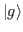
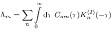
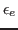

Next: Spectral Density
Up: Bath Correlation Functions and
Previous: Bath Correlation Functions and
Contents
Index
Bath correlation function is defined as a two point correlation function
of the bath part  of the system-bath interaction operator,
i.e. as
where  is the equilibrium bath density operator, 
is the bath evolution operator and the trace is taken over the bath
degrees of freedom. The bath correlation function is a complex quantity
and as such it has a real part
and an imaginary part
so that
 |
(5.4) |
Tomas Mancal
2016-10-10